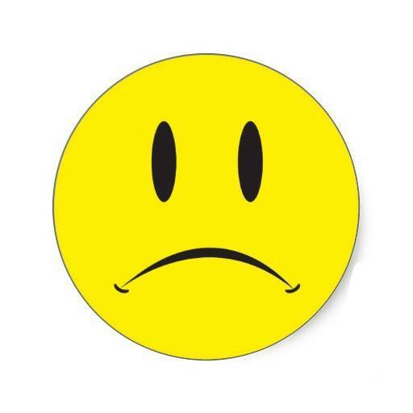
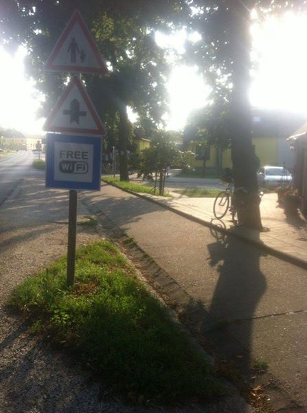

Do Itálie na kole (1. cesta) léto 2014
Jednoho dne mě napadlo, že bych mohl dojet na kole až k moři. A tak jsem si pár dní před odjezdem koupil kolo, stan a celou kempingovou výbavu a s 25 kg nadváhy se vydal na cestu. Po 11 dnech jsem se dostal až do Itálie do Trieste.
Celá fotostory začíná v kině Nový Smíchov, kde jsem viděl ten dokonalý film od slavné trabantí výpravy. Cestovatelství mě do té doby vůbec nezajímalo, ale tenhle film mi změnil život. Od té doby jsem začal sledovat řadu dalších cestovatelských projektů a říkal jsem si, že bych taky mohl něco vlastního zkusit.
A tak mě napadlo, že bych mohl dojet na kole až k moři. Háček byl je v tom, že jsem žádné kolo už 10 let neměl. Šel jsem tedy do nejbližší cykloprodejny a koupil první kolo, na které jsem narazil. Neměl jsem občanku, kterou byla podmíněna testovací jízda, takže jsem kolo kupoval podle barvy. Tohle se mi líbilo, mělo pěkný rám. Nevěděl jsem o kolech vůbec nic tehdy a nevím o nich vůbec nic ani teď, ale na tomhle kole jsem nakonec bez problémů dojel až do Ázerbájdžánu.
Drobný problém byl taky trochu v tom, že jsem měl nadváhu, něco kolem 20 kg přes limit. S takovou váhou by to mohlo být nebezpečné. Začal jsem tedy měsíc před cestou trochu běhat, abych něco zhubl. Nakonec jsem přibral skoro 5 kg.
Chtěl jsem, aby to bylo trochu dobrodružné, takže jsem odmítl používání moderních technologií, jako je GPS, a všechny mapy jsem si poctivě vytiskl. U mapy Itálie mi došla černá barva a moře bylo vytisknuté rudě. A jak víme, Rudé moře je velmi nebezpečná oblast. Zpětně jsem rád, že se mi nic nestalo.
A tak jsem 2.8. stál na začátku cesty k moři. Poprvé jsem si zkusil, jaké to je vézt kompletní zátěž a zjistil jsem, že se s kolem téměř nedá zatáčet. Takže už nebylo cesty zpět a nezbývalo než vyrazit na cestu směr Chorvatsko.
Výjezd z Prahy měl být takový bonbonek na začátek, jak my cyklisté říkáme. Po zhruba 7 km jsem se dostal ke Kunratickému lesu, kde mě čekalo přibližně půlkilometrové stoupání. Po 100 metrech jsem vzdal pokus o výjezd ala Armstrong a potupně se snažil kolo vytlačit až na vrchol, ačkoliv průvod maminek s kočárky by mohl leckomu naznačit, že to tak složité nemohlo být.
Kolem 18 hodin jsem dorazil někde k Benešovu a když jsem projížděl menším lesem, rozhodl jsem se, že noc přečkám zde. Nejvíce mi vadila absence sprchy, celý den byly teploty přes 30 stupňů a pot přitahuje všechen okolní hmyz. Proti komárům jsem měl jen levný sprej, který ale vůbec vůbec nefungoval. Naopak mám pocit, že všechen hmyz přitahoval a ještě jim dělal dobře.
Druhý den bylo ale hrozně špatně. Bolely i svaly, o kterých jsem nevěděl, že je mám. Ještě jsem se cca 6 km trápil směrem k Táboru, než mě dorazila značka Praha: 38 km. Po celodenním bloudění a trápení v kopcích jsem se dostal jen kousíček za Prahu? Přemýšlel jsem, co dále a rozhodl jsem se cestu vzdát. Možná to bylo přeci jen příliš. Z těžkým srdcem jsem se rozhodl celý výlet ukončita vrátil jsem se nejbližším vlakem domů. Druhý den ráno jsem se zvážil a měl jsem téměř 4,5 kg méně než v den startu. Jako redukční dieta docela dobrý!

Druhý den mi to bylo hrozně líto. Přemýšlel jsem, že to zkusím příští rok znova...ale to bylo moc daleko. Dobře, tak za měsíc? I to je moc daleko... Rozhodl jsem se, že to tedy zkusím ještě jednou teď. Za dva týdny jsem ale musel být kvůli přijímačkám zpátky. Přesunul jsem se tedy do mého rodného města na východ, vyházel polovinu výbavy a vyrazil znova.
Den 6. 8. 2014, druhý start. Deštivo, ale musel jsem vyrazit. Celou cestu jsem přemýšlel, zda se na to raději nevykašlat. Že to je za mé situace nemožné. Po cca 30 km jsem zastavil a přemýšlel jsem, že to otočím a vrátím se zpátky. No a pak před sebou vidím ceduli, na které je mé jméno, jasná šipka rovně a věta „nemožné je jenom slovo“. Chápu, mám pokračovat dále.
Pokračoval jsem tedy dále a odpoledne jsem se dostal na hranice se Slovenskem. Přiznám se, že zdejší politickou situaci moc nesleduji, a tak jsem ocenil, že mě obyvatelé Čadci ihned seznámili s akuální situací.
Když jsem dojel do obce Bytča, rozhodl jsem se, že zde přespím. Vylezl jsem co nejvýš a postavil stan. Když jsem usínal, ozval se zničeho nic příšerný řev a celý stan se začal třást. Když se podíval ven, viděl jsem, jak od stanu utíká (pravděpodobně) divoké prase. Nejspíš šlo na obchůzku a zakopklo i nataženou šňůru stanu. Mně, praseti ani stanu se nic nestalo, usnout se mi ale už nepodařilo.
Druhý den kolem 4 jsem vzdal veškeré pokusy o usnutí a vydal se na další etapu. Popojel jsem 60 km a v Trenčíně našel nejbližší penzion. Panu majiteli se vůbec nelíbilo, že si chci vzít kolo na pokoj a chtěl, abych nechal kolo na dvorku, že jsou všude kamery a že to bude v pohodě. Tak fajn, když mi někdo kolo ukradne, budu z toho mít i videozáznam.
Kolo mi ale bohužel nikdo neukradl, a tak vyrážím do třetího dne. Cílem bylo dostat se co nejblíže k Bratislavě. Tady u těch laviček to bylo poprvé, kdy mě někdo oslovil. Byla to starší paní. Už si moc nepamatuji, o čem jsme se bavili, ale myslím, že měla taky syna/vnuka, který taky jezdí na kole.

K večeru jsem dojel asi 20 km od Bratislavy. Nechtěl jsem vjet přímo do hlavního města Slovenska, nenašel bych místo na přespání, takže jsem se utábořil kousek od cesty. Celou noc jsem trpěl utkvělou představou, že mě někdo chce zabít, takže jsem opět celou noc nespal.
A tak jsem si mohl vychutnat podruhé na cestě východ slunce. Nakonec jsem za celý výlet 4 téměř celé noci nespal.
Čtvrtý den ráno jsem přijel do Bratislavy a hledal nějakou možnost přespání. Azyl mi poskytli až v hotelu Turistik. Ubytoval jsem se a šel hledat nejbližší zastávku metra, abych si prohlédl město. Jediné metro, které jsem ale v Bratislavě našel, je obchodní dům Metro.
Slovensko bylo fajn, ale zpětně si vybavím především tři věci: 1) velké množství pomníčků „Vzpomínáme“ podél silnice, 2) velké množství billboardů s reklamou na herny, 3) vyjeté koleje v silnicích, obzvláště u Bratislavy.
Na začátku 5. dne vjíždím do Rakouska. Kolem je spoustu warningů, které jsou však jen v němčině. Já německy nerozumím, takže pro mě naštěstí neplatí. Navíc jsem stejně programátor, což znamená, že mě warningy nechávají klidným a zajímají mě až errory.
Rakousko je nádherné. Cyklostezky jsou jako z pohádky. Žádná ze 6 zemí, ve které jsem během dvou týdnů byl, se mu nemůže v tomhle ohledu rovnat. Pro cyklisty rozhodně ráj.
Jenže jsem byl v Rakousku o den později, než bylo v plánu, v neděli. A v neděli je v Rakousku úplně všechno uzavřeno. Neděle se už ani neuvádí v plánu otevírací doby. Jsou zavřené obchody, restaurace a dokonce i drtivá většina benzinových pump kolem měst. Během cesty jsem narazil na jednu jedinou, která mě zachránila před dehydratací. Cestou jsem narazil na cyklisty, kteří měli stejný problém, a řešili to tak, že kradli z ostatních polí alespoň červenou řepu. Rakousko je krásné, ale v neděli rozhodně nebrat.

Chtěl jsem v Rakousku zůstat déle, ale v neděli to nešlo, takže jsem se dostal až k hranicím z Maďarskem a jel se najíst jako mnoho jiných Rakušanů tam.
A jsem v Maďarsku. Zde bylo nejsložitější domluvit se. Na otázku „Do you speak English“ totiž Maďaři nejčastěji odpoví „ja, bitte“.
V Maďarsku mají dokonce značky upozorňující na free WiFi, jen internet tam zatím nemají.

První spaní v Maďarsku, kousek od města Lövő. Poprvé jen v moskytiéře. Spalo se nezvykle dobře, až na ty pobíhající srnky.
Den číslo 6 je ale krizový. Od rána je mi hrozně špatně, celý den jsem nemohl sníst vůbec nic. Poprvé za celou cestu musím kolo do kopce tahat. Venku je 35 stupňů. Chvíli mám teplotu, chvíli mám zimnici. Tělo je z toho tak zmatené, že vůbec neví, jakou nemoc si má zvolit. Kousek za městem Szombathely mě navíc dorazila tahle cedule. Do Ljublany je to ještě 299 km a z ní ještě dalších 100 km k moři. Takže nejsem ještě ani v polovině cesty. Navíc dosud to byly jen roviny a Slovinsko je celé v kopcích. V dálce se začíná blýskat a rozhodně ne na lepší časy. Po 60 km zalézám do prvního motelu, který najdu. Není tu vůbec nic, nesvítí tu světlo, nikdo mi nic nerozumí, protože Maďaři umí jen německy. Tenhle den byl ze všech nejtěžší.
Sedmý den je úplně jiný. Po včerejší depresi ani památky a já se dokonce dostal až za hranice Slovinska. Opět velká změna, jiný svět. Silnice jsou ve výborném stavu, vedle těch velkých vede vždy ještě jedna další, která je jen pro cyklisty.
Slovinsko je velmi vyspělé, takže na každém kroku člověk potkává značky „dej pozor na pobíhající podnikatelé s mladými sekretářkami“.
Když jsem začal hledat místo na přespání, narazil jsem na hostel se zářícím nápisem „bikers welcome“.
Celý den byl protrpěný, stan se mi stavět nechtělo, takže jsem noc trávil v hotelu, konkrétně ve Sl. Bistrici. Večer město zachvátila průtrž mračen, bylo to dobré rozhodnutí.
Další den bohužel déšť neustal a po zbytek cesty mě už provázel.
Slovinsko.
Slovinsko podruhé.
A Slovinsko potřetí.
Cyklotrip po Slovinsku se dá plánovat po jakékoliv cestě. Pokud je nějaká uzavřená po cyklisty, vede hned vedle krásně upravená cesta jen pro cyklisty.

Občas však stezky pro cyklisty končí bez možnosti pokračovat dále. Po cestě se nedá, v dálce je vidět zákaz vjezdu. A cesta vlevo vede zase zpět.

Na konci 8. dne jsem potřeboval facku, abych se vzpamatoval. Nakonec jsem ji fakt našel.
Ljubljana. V Szombathely mi přišla jako naprosto nedosažitelný cíl. Po 3 dnech jsem se sem ale doplazil.

Ljubljana, moderní město. Cyklisti si tady dokonce jezdí přes přechody po červených kobercích.
Když byla moje teta na gymnáziu, měla možnost vybrat si někoho z Evropy, s kým si bude psát a seznámí se. Její volba padla na Grétu ze Slovinska. Psali si další desítky let. Teta před rokem zemřela, kontakt ale získala její sestra, moje máma. Když mi bylo 7 let, byl jsem u nich na dovolené, no a přesně po 20 letech jsem tam zavítal znova. Tuhle koupelnu si pamatuji i po 20 letech. Bylo to totiž poprvé (a dodnes vlastně naposled), co jsem viděl bidet! Taky si pamatuji kupu hranolků, extrémně rychlé auto a naprosto geniální firemní propisky, kterými jsem psal celou základku.
Poslední cyklistický den začíná. Nakonec to byl zdaleka den nejtěžší. Čekalo mě 120 km s převýšením 1200 m.
Chvíli po výjezdu tachometr ukázal 1000 najetých kilometrů.
Obchodní centra Mercator. Takhle začínal každý den. Celé kolo odstrojit, naložit veškerou výbavu do košíku, projít obchodní centrum, doplnit zásoby a zase všechny brašny naložit a upevnit. Všechno z kola dát pryč a zase tam všechno připevnit zabralo tak 20 minut minimálně. Vůbec by mě nenapadlo, jaký problém tohle bude. A kolik jednodušší by bylo nejet sám.
A závěr ve stylu poslední etapy Tour de France...
Poslední velké hory před příjezdem k moři. Jo jo, to jsem si jen v tu chvíli myslel. Protože jsem neměl GPS, sjel jsem na opačnou stranu a musel jsem hory vyjíždět znova. Ztráta 3 hodin.
Přejezd do Itálie. Poslední, 6. země. Jsem asi 10 km od moře.
Mission Completed. Trieste, Itálie. Dál už je jen moře.
Takže posledních 5 metrů k moři. A při západu slunce se dotknout moře.
Celkem 10 dní, včetně prvního výjezdu něco přes 1100 km.
Další den jsem trávil v Trieste. Město si prošel, navštívil co se dalo. Přemýšlel jsem o tom, že bych mohl jet ještě dále do Chorvatska, ale měl jsem na celou cestu jen dva týdny a musel jsem se vracet domů. U moře jsem stejně neměl co dělat a den bez kola jsem se spíše nudil.
Cestou zpět jsem musel jet vlakem, kde jsem neměl jisté, že mi vezmou kolo. Celé jsem ho skoro do šroubků rozmontoval a slepil, až z toho vznikl malý cestovní balíček.
A cesta zpět domů. Nejprve z Trieste do Udine místňákem, pak z Udine do Vídně ICčkem a následně z Vídně do Prahy vlakem Eurocity. Když jsem nastoupil v Trieste do vlaku, trochu mě překvapilo, že jsem v něm úplně sám. Venku stál jen pokuřující Ital v saku, s nagelovanýma vlasama. Tak jsem se ho zeptal, zda je tohle vlak do Udine. Zhruba půl minuty se na mě díval a kouřil a pak jen řekl „no“. Později jsem zjistil, že byl spoj zrušen. To ale hlásí jen v italštině.
Cesta z Udine do Vídně proběhla rychle. Jen ve Vídni jsem musel čekat 8 hodin na další spoj. Noc jsem trávil na nástupišti. Chtělo se mi hrozně spát, každou chvíli ale ke mně chodila ochranka a upozorňovala mě, že nesmím ležet, ale jen sedět...tak jsem za tu noc alespoň naplánoval další cestu.
A to je konec celé story. Celé dovolená nakonec zabrala 13 dní, pokud počítám i první pokus, tak 17. Bylo to ale naprosto úžasné a jsem hrozně, hrozně, hrozně moc rád, že jsem to celé absolvoval. Jen teď potřebuji dovolenou. Tu klasickou.